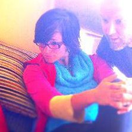

I am a fourth year PhD student at Berkeley in EECS working with Björn Hartmann in the Berkeley Institute of Design (BiD) and the Citris Invention Lab.
I did my undergrad work at Indiana University, receiving a BS in CS, a BA in Math, and minors in Psychology and Spanish.
My research focus is digital fabrication and how we can leverage its potential to make prototyping input devices a faster and easier proces. I'm also intrigued by using fabrication to inspire fascination with STEAM in tomorrow's scientists. My husband, Evan Savage, and I co-founded a company (Savage Internet) in the space of experiential education space.
I also have a deep wanderlust, and I like working on random projects.